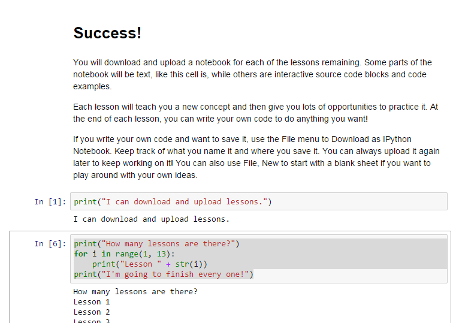

The next several pages will lead you through some
practice exercises to learn about coding. Type in
the code shown, in an input box In [*] at Jupyter.org,
and press control-enter to run it.
Code looks like this.
Read the lesson for understanding.
Type the python code into Jupyter and run it.
Try to understand what the code does and why.
Make it do something else.
Move on to the next part of the lesson.
Ask a mentor or classmate questions when you need clarification.
To save a number or word, we have to give it a name. The name is called a variable because its value can vary; it can change over time. Here are some variables and their values.
When you set a variable's value, that is called assigning a value to the variable.
The + symbol does addition and - does subtraction. What value does the total variable hold below? Copy-paste into Jupyter and run it. Were you right?
The / symbol does division, like a fraction would. What value does the average variable hold? Copy-paste into Jupyter and run it. Were you right?
The * symbol does multiplication. In the next example, a customer is buying 3 loaves of bread which cost $1.99 each. The sales tax is 5%. What is the total price of their order? Copy-paste into Jupyter and run it. How does the computer do the calculation?
The counter variable below demonstrates that the variable's value can be reassigned: you can keep assigning new values to it. It remembers only the most recent value. Copy and paste it into Jupyter and run it. What does it print?
Here's another example of assigning new values. Can you guess what it prints? Run it.
The next example uses String variables. String means text - letters, punctuation, words, and sentences. The name comes from "a string of letters" like an alphabet bead bracelet. A single letter or punctuation mark is called a character. A string is a way to put together many characters, to represent human text. Any value inside "double quote marks" is a string.
Run this code example. What does it do?
In the previous example, why is the word name printed as name in the second line, but the variable value (Jenny) is printed instead in the third line? If you're not sure, keep reading below.
When name is inside a string (inside a matched pair of double quotes), the letters n-a-m-e are printed out. But when it's not inside double quotes, the computer understands it as part of your source code, such as a variable, and it interprets it and prints the value stored inside of it instead.
Multiple strings can be combined into one string by putting + between them. This isn't
numeric addition. It's called concatenation which means combining one
after the other. Here's an example.
If you want to print a number variable next to a string, using string concatenation, you have to turn the number into a string first, by wrapping str() around it. This tells the computer you do intend to treat the number as if it's a string. This is one solution to the error "TypeError: Can't convert 'int' object to str implicitly".
The other solution is to use a comma in the print statement instead, like this.
If you want the person to type in a number, you can use input(), but you need an
extra step. int() is the opposite of str(). It converts from a string to a number.
If you forget int() you will see either "TypeError: Can't convert 'int' object to str implicitly"
or you will see "TypeError: unsupported operand type(s) for -: 'str' and 'int'".
In either case, casting the string as an integer number will let you
do math with it.
Casting changes the data type of a value or variable. In python, which is what we're using here, numbers and strings are the basic data types you use. In other programming languages, there are multiple kinds of numbers, and each is a different data type. Here are some examples. An integer is a counting number like 1, 2, 3, 4, or -1, -2, -3, -4, with no decimal places. A decimal or floating point number has values after the decimal place, like 3.14 or 1.01, or 2.0000 as well. Casting 3.14 to an integer makes it a 3 instead. Casting 3 (the integer) to a float makes it 3.0000 instead. Integer and float are data types. String is also a data type.
You won't see casting very much in python (except, as shown above, to convert a string to a number). But when you start exploring other programming languages, you may use it more. It helps to know what the word means, even if you're not using it yet.
When you're writing code, sometimes it helps to leave yourself notes. You can do this by putting comments in the code. A comment is a line that starts with # and it will be ignored when running the code, so it's okay to write English sentences. Here's an example.
Another way to help your code make sense is to choose good variable names. A good name tells you something about the real-world meaning of the value it holds. For instance, firstName and lastName are good variable names when the program asks the person at the keyboard for their name.
You could use f and l but that's a little confusing; what if somewhere else in your program, you wanted a variable whose name also started with f? You might not remember which is which; you might start to mix them up, and make mistakes. Single-letter variable names make it difficult to read the code. That makes it hard to know what you did when you come back to your work later. You can make it easier on your brain by choosing longer, more useful names.
| Variable | Meaning | Good or bad? |
|---|---|---|
| m | minimum of a bunch of numbers | Bad: m can also mean maximum! |
| min | minimum of a bunch of numbers | Good: fairly distinctive, not easily mistaken for something else |
| ac | apple count; how many apples | Bad: hard to guess at later if you forget what it is |
| appleCount | apple count; how many apples | Good: very clear |
| appleCost | Cost of one apple | Good: Uses full words, gives an idea of its purpose. Bad: Doesn't indicate units; could be misused |
| perAppleCostInDollars | Cost of one apple | Very good: Units are very clear and mathematical meaning is obvious |
Here is an ipython notebook file. Right-click (Windows) or Command-click (Mac) to "Save link as"
a file on your computer.
Download sample.ipynb
Now go back to Jupyter and pick menu File, Open, then click the Upload button.
Choose the sample.ipynb file you just downloaded, and click okay.
Then press the blue Upload button next to the file.
The file is uploaded. Find its name at the bottom of the list, and click the name to open it.
Good job - that's how you save, upload, and open a notebook. You can also use Jupyter's file menu to download your notebook when you've worked on it, to save your own code for later. Next, download the lesson2exercises.ipynb file (below) and upload it to Jupyter. Click the filename in Jupyter to open it. Work the exercises inside the file, to practice using variables.